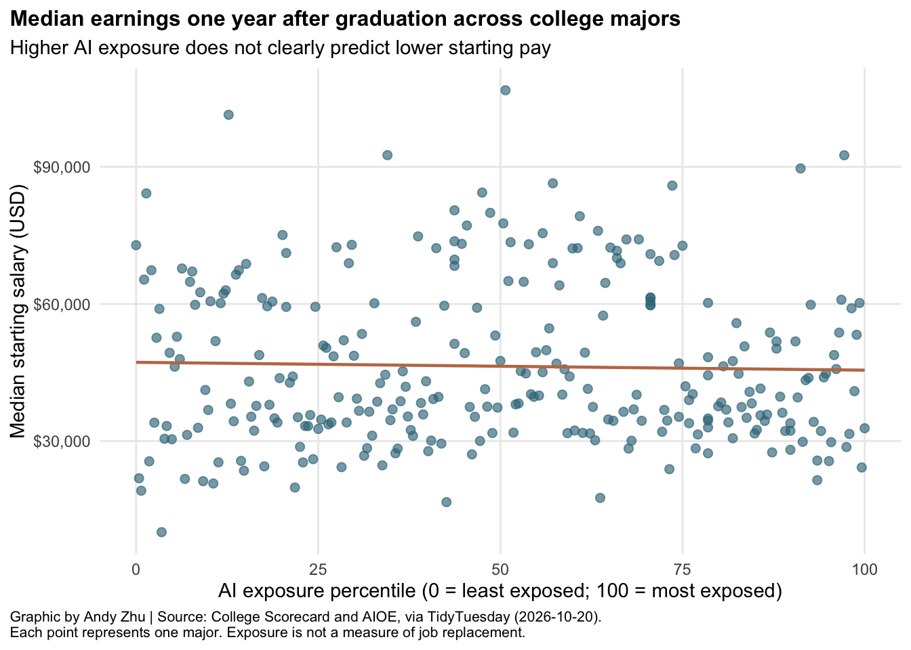
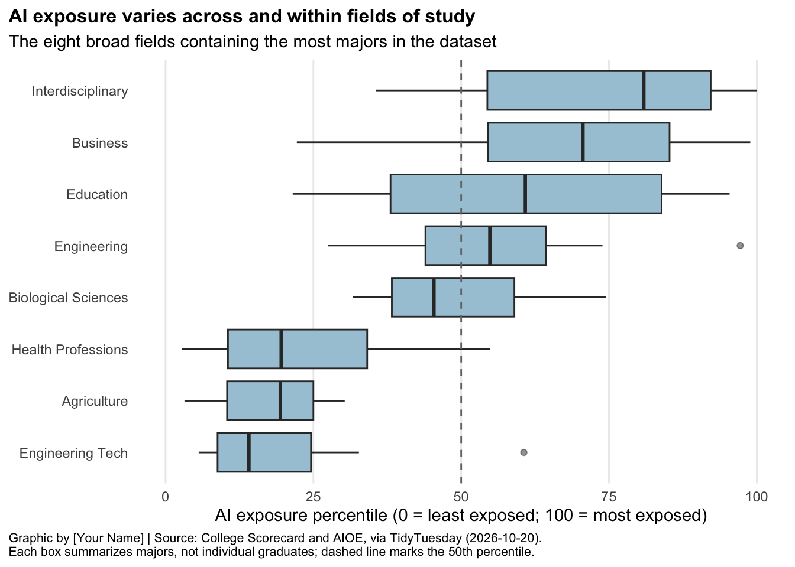
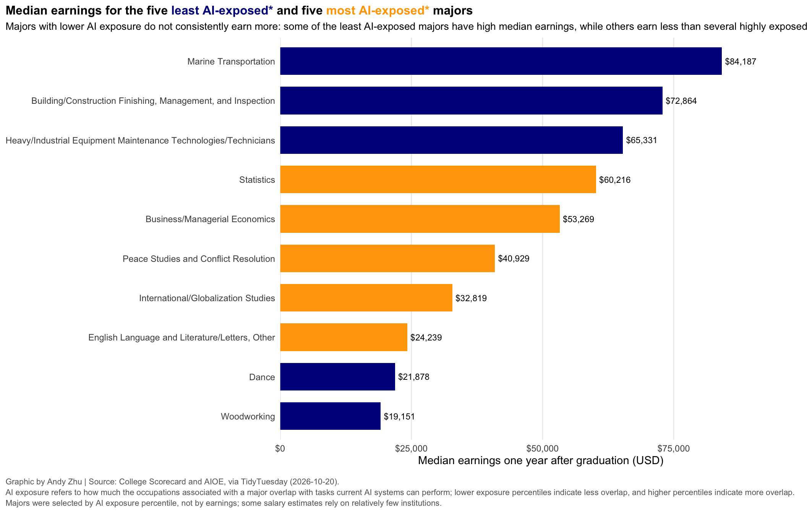

Background info: This dataset combines information on 285 U.S. college majors. For each major, it includes median earnings one year after bachelor degree completion and a measure of how much its related occupations overlap with AI capabilities. The AI exposure percentile runs from 0 to 100 among the majors. AI exposure is not the same as the probability of being replaced by AI: AI might also help workers with their tasks.
Research question:Do college majors with lower AI exposure have higher starting salaries, and how does this relationship vary across fields of study?
ggplot(major_clean, aes(x = ai_exposure_percentile, y = median_starting_salary)) +geom_point(color ="#39758A", alpha =0.65, size =2) +geom_smooth(method ="lm", se =FALSE, color ="#C07855", linewidth =0.8) +scale_x_continuous(breaks =c(0, 25, 50, 75, 100), limits =c(0, 100)) +scale_y_continuous(labels = scales::label_dollar()) +labs(title ="Median earnings one year after graduation across college majors",subtitle ="Higher AI exposure does not clearly predict lower starting pay",x ="AI exposure percentile (0 = least exposed; 100 = most exposed)", y ="Median starting salary (USD)",caption ="Graphic by Andy Zhu | Source: College Scorecard and AIOE, via TidyTuesday (2026-10-20).\nEach point represents one major. Exposure is not a measure of job replacement.") +theme_minimal() +theme(panel.grid.minor =element_blank(), plot.title.position ="plot", plot.title =element_text(face ="bold", size =12), plot.caption.position ="plot", plot.caption =element_text(hjust =0, size =8))

The relationship between AI exposure and starting salary is weak in this dataset. Majors with similar AI exposure scores can have very different starting salaries, a lower AI exposure percentile does not necessarily imply higher starting pay.
ggplot(field_data, aes(x = ai_exposure_percentile, y =fct_reorder(broad_field_short, ai_exposure_percentile, .fun = median))) +geom_boxplot(fill ="#A7C8D8", outlier.alpha =0.5) +geom_vline(xintercept =50, linetype ="dashed", color ="grey45") +scale_x_continuous(breaks =c(0, 25, 50, 75, 100), limits =c(0, 100)) +labs(title ="AI exposure varies across and within fields of study",subtitle ="The eight broad fields containing the most majors in the dataset",x ="AI exposure percentile (0 = least exposed; 100 = most exposed)", y =NULL,caption ="Graphic by [Your Name] | Source: College Scorecard and AIOE, via TidyTuesday (2026-10-20).\nEach box summarizes majors, not individual graduates; dashed line marks the 50th percentile.") +theme_minimal() +theme(panel.grid.minor =element_blank(), panel.grid.major.y =element_blank(), plot.title.position ="plot", plot.title =element_text(face ="bold", size =12), plot.caption.position ="plot", plot.caption =element_text(hjust =0, size =8))

Broad fields differ in their typical AI exposure, but the boxes and whiskers also show variation among majors within the same field. Consequently, broad subject labels cannot fully describe a graduate’s potential AI exposure.
ggplot(extreme_majors, aes(x = median_starting_salary, y =fct_reorder(field_of_study, median_starting_salary), fill = exposure_group)) +geom_col(width =0.7) +geom_text(aes(label = scales::dollar(median_starting_salary)), hjust =-0.1, size =3) +scale_fill_manual(values =c("Least exposed"="darkblue", "Most exposed"="orange")) +scale_x_continuous(labels = scales::label_dollar(), expand =expansion(mult =c(0, 0.18))) +labs(title ="Median earnings for the five <span style='color:darkblue;'>least AI-exposed*</span> and five <span style='color:orange;'>most AI-exposed*</span> majors",subtitle ="Majors with lower AI exposure do not consistently earn more: some of the least AI-exposed majors have high median earnings, while others earn less than several highly exposed majors.",x ="Median earnings one year after graduation (USD)", y =NULL,caption =paste("Graphic by Andy Zhu | Source: College Scorecard and AIOE, via TidyTuesday (2026-10-20).","\nAI exposure refers to how much the occupations associated with a major overlap with tasks current AI systems can perform;","lower exposure percentiles indicate less overlap, and higher percentiles indicate more overlap.","\nMajors were selected by AI exposure percentile, not by earnings; some salary estimates rely on relatively few institutions.")) +theme_minimal() +theme(panel.grid.major.y =element_blank(), panel.grid.minor =element_blank(), legend.position ="none", plot.title.position ="plot",plot.title = ggtext::element_markdown(face ="bold", size =12), plot.subtitle =element_text(size =10), plot.caption.position ="plot",plot.caption =element_text(hjust =0, size =8, color ="grey40", margin =margin(t =12), lineheight =1.1))

The five least AI-exposed majors include both higher and lower paying programs. This comparison shows why ranking majors on AI exposure alone is not sufficient for evaluating their economic prospects. It also shows the range of salaries at both ends of the exposure distribution. Since a few majors draw on a small number of colleges, these examples should not be treated as predictions of an individual student’s salary.
In Conclusion, the data show a weak relationship between AI exposure and starting salary across majors. Exposure differs across fields and majors within the same field, while the salaries of high or low exposed majors can vary a lot. Students considering a major may therefore want to evaluate both earnings and the kinds of skills they need. Also, AI exposure measures overlap with AI capabilities, it does not measure the probability that graduates will lose their jobs because of AI.
Explore the week’s TidyTuesday challenge. Develop a research question, then answer it through a short data story mainly composed of effective visualizations. Provide sufficient background for readers to grasp your narrative. Refer to the Homework Instructions ⭐ page on the course website for details on how to submit this part.
Source Code
---title: "Homework 05"---## TidyTuesday Part (Optional)::: {.callout-important title="Instructions"}You can count work on this week's TidyTuesday toward the exceptional work.:::```{r}library(tidyverse)library(ggtext)majors <-read_csv("https://raw.githubusercontent.com/rfordatascience/tidytuesday/main/data/2026/2026-10-20/ai_salary_majors.csv")glimpse(majors)names(majors)nrow(majors)``````{r}majors |>summarise(number_of_majors =n(), missing_salary =sum(is.na(median_starting_salary)), missing_exposure =sum(is.na(ai_exposure_percentile)))```Background info: This dataset combines information on 285 U.S. college majors. For each major, it includes median earnings one year after bachelor degree completion and a measure of how much its related occupations overlap with AI capabilities. The AI exposure percentile runs from 0 to 100 among the majors. AI exposure is not the same as the probability of being replaced by AI: AI might also help workers with their tasks.Research question:Do college majors with lower AI exposure have higher starting salaries, and how does this relationship vary across fields of study?```{r}major_clean <- majors |>filter(!is.na(field_of_study), !is.na(broad_field_short), !is.na(median_starting_salary), !is.na(ai_exposure_percentile))major_clean |>summarise(number_of_majors =n(), median_salary =median(median_starting_salary), median_exposure_percentile =median(ai_exposure_percentile),salary_exposure_correlation =cor(median_starting_salary, ai_exposure_percentile))``````{r}ggplot(major_clean, aes(x = ai_exposure_percentile, y = median_starting_salary)) +geom_point(color ="#39758A", alpha =0.65, size =2) +geom_smooth(method ="lm", se =FALSE, color ="#C07855", linewidth =0.8) +scale_x_continuous(breaks =c(0, 25, 50, 75, 100), limits =c(0, 100)) +scale_y_continuous(labels = scales::label_dollar()) +labs(title ="Median earnings one year after graduation across college majors",subtitle ="Higher AI exposure does not clearly predict lower starting pay",x ="AI exposure percentile (0 = least exposed; 100 = most exposed)", y ="Median starting salary (USD)",caption ="Graphic by Andy Zhu | Source: College Scorecard and AIOE, via TidyTuesday (2026-10-20).\nEach point represents one major. Exposure is not a measure of job replacement.") +theme_minimal() +theme(panel.grid.minor =element_blank(), plot.title.position ="plot", plot.title =element_text(face ="bold", size =12), plot.caption.position ="plot", plot.caption =element_text(hjust =0, size =8))```The relationship between AI exposure and starting salary is weak in this dataset. Majors with similar AI exposure scores can have very different starting salaries, a lower AI exposure percentile does not necessarily imply higher starting pay.```{r}top_fields <- major_clean |>count(broad_field_short, sort =TRUE) |>slice_head(n =8) |>pull(broad_field_short)field_data <- major_clean |>filter(broad_field_short %in% top_fields)field_data |>group_by(broad_field_short) |>summarise(number_of_majors =n(), median_ai_exposure =median(ai_exposure_percentile), .groups ="drop") |>arrange(median_ai_exposure)``````{r}ggplot(field_data, aes(x = ai_exposure_percentile, y =fct_reorder(broad_field_short, ai_exposure_percentile, .fun = median))) +geom_boxplot(fill ="#A7C8D8", outlier.alpha =0.5) +geom_vline(xintercept =50, linetype ="dashed", color ="grey45") +scale_x_continuous(breaks =c(0, 25, 50, 75, 100), limits =c(0, 100)) +labs(title ="AI exposure varies across and within fields of study",subtitle ="The eight broad fields containing the most majors in the dataset",x ="AI exposure percentile (0 = least exposed; 100 = most exposed)", y =NULL,caption ="Graphic by [Your Name] | Source: College Scorecard and AIOE, via TidyTuesday (2026-10-20).\nEach box summarizes majors, not individual graduates; dashed line marks the 50th percentile.") +theme_minimal() +theme(panel.grid.minor =element_blank(), panel.grid.major.y =element_blank(), plot.title.position ="plot", plot.title =element_text(face ="bold", size =12), plot.caption.position ="plot", plot.caption =element_text(hjust =0, size =8))```Broad fields differ in their typical AI exposure, but the boxes and whiskers also show variation among majors within the same field. Consequently, broad subject labels cannot fully describe a graduate's potential AI exposure.```{r}least_exposed <- major_clean |>arrange(ai_exposure_percentile) |>slice_head(n =5) |>mutate(exposure_group ="Least exposed*")most_exposed <- major_clean |>arrange(desc(ai_exposure_percentile)) |>slice_head(n =5) |>mutate(exposure_group ="Most exposed*")extreme_majors <-bind_rows(least_exposed, most_exposed) |>mutate(exposure_group =if_else(str_detect(as.character(exposure_group), regex("least", ignore_case =TRUE)), "Least exposed", "Most exposed"))``````{r}#| fig-width: 11#| fig-height: 7ggplot(extreme_majors, aes(x = median_starting_salary, y =fct_reorder(field_of_study, median_starting_salary), fill = exposure_group)) +geom_col(width =0.7) +geom_text(aes(label = scales::dollar(median_starting_salary)), hjust =-0.1, size =3) +scale_fill_manual(values =c("Least exposed"="darkblue", "Most exposed"="orange")) +scale_x_continuous(labels = scales::label_dollar(), expand =expansion(mult =c(0, 0.18))) +labs(title ="Median earnings for the five <span style='color:darkblue;'>least AI-exposed*</span> and five <span style='color:orange;'>most AI-exposed*</span> majors",subtitle ="Majors with lower AI exposure do not consistently earn more: some of the least AI-exposed majors have high median earnings, while others earn less than several highly exposed majors.",x ="Median earnings one year after graduation (USD)", y =NULL,caption =paste("Graphic by Andy Zhu | Source: College Scorecard and AIOE, via TidyTuesday (2026-10-20).","\nAI exposure refers to how much the occupations associated with a major overlap with tasks current AI systems can perform;","lower exposure percentiles indicate less overlap, and higher percentiles indicate more overlap.","\nMajors were selected by AI exposure percentile, not by earnings; some salary estimates rely on relatively few institutions.")) +theme_minimal() +theme(panel.grid.major.y =element_blank(), panel.grid.minor =element_blank(), legend.position ="none", plot.title.position ="plot",plot.title = ggtext::element_markdown(face ="bold", size =12), plot.subtitle =element_text(size =10), plot.caption.position ="plot",plot.caption =element_text(hjust =0, size =8, color ="grey40", margin =margin(t =12), lineheight =1.1))```The five least AI-exposed majors include both higher and lower paying programs. This comparison shows why ranking majors on AI exposure alone is not sufficient for evaluating their economic prospects. It also shows the range of salaries at both ends of the exposure distribution. Since a few majors draw on a small number of colleges, these examples should not be treated as predictions of an individual student's salary.In Conclusion, the data show a weak relationship between AI exposure and starting salary across majors. Exposure differs across fields and majors within the same field, while the salaries of high or low exposed majors can vary a lot. Students considering a major may therefore want to evaluate both earnings and the kinds of skills they need. Also, AI exposure measures overlap with AI capabilities, it does not measure the probability that graduates will lose their jobs because of AI.Explore the week's [TidyTuesday](https://github.com/rfordatascience/tidytuesday) challenge. Develop a research question, then answer it through a short data story mainly composed of [effective visualizations](https://docs.google.com/presentation/d/1Q-C0sFxYGQvkxb6PU6OM_YOv6Nilalpk-IWb362PoRc/preview?slide=id.g13360dab5d5_0_61#slide=id.g13360dab5d5_0_61). Provide sufficient background for readers to grasp your narrative. Refer to the Homework Instructions ⭐ page on the course website for details on how to submit this part.